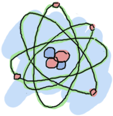

Starting Out (for real)
Erlang là một ngôn ngữ tương đối nhẹ và không phức tạp ( theo cách mà chúng ra hình dung so sánh C với C++, C ít phức tạp hơn so với C++ ). Trong chương này chúng ta sẽ tìm hiều về các kiểu dữ liêu cơ bản của Erlang. tôi khuyến khích bạn lên đọc Reading it is strongly advised as it explains the building blocks for all the programs you'll write with Erlang later on.
Term
Trong Erlang, chúng ta quy ước dữ liệu của bất kỳ kiểu dữ liệu nào được gọi là term
Dữ liệu kiểu số ( Numbers )
Trong Shell, biểu thức phải kết thúc bằng dấu chấm tiếp nối là một khoảng trắng (ngắt dòng, dấu cách etc.),
nếu không shell sẽ không ghi nhận và thực thi biểu thức đó. Đới với trường hợp bạn muón sử dụng nhiều biểu thức trong shell, bạn có thể dùng dấu
, để phân cách, nhưng kết quả hiển thị cuối cùng trong shell sẽ là biểu thức cuối cùng ( những biểu thức trước đó vẫn được thực hiện nhưng sẽ không hiển thị kết quả).
cú pháp này có thể không thông dụng đối với nhiều người bởi nó đến từ Prolog, một ngôn ngữ lập trình logic
( phiên bản khởi tạo đầu tiên của Erlang được thực hiện trong Prolog ).
Nào hãy truy cập vào chế độ shell và gõ những dòng lệnh sau ( cách truy cập shell của Erlang được mô tả trong chương trước )
1> 2 + 15. 17 2> 49 * 100. 4900 3> 1892 - 1472. 420 4> 5 / 2. 2.5 5> 5 div 2. 2 6> 5 rem 2. 1
Chú ý: Không như một số ngôn ngũ khác bạn phải tường mình kiểu dữ liệu số , Erlang không quan tâm nếu bận nhập là kiểu số thực hay là kiểu số nguyên: cả hai kiểu dữ liệu này đềù hỗ trợ khi bạn thực hiện các phép tính số học.
 Trong quá trình xử lí các phép toán ( phần lớn là số nguyên và số thực ), Erlang sẽ tự động chuyển đổi kiểu dữ liệu cho bạn.
Tuy nhiên, nếu bạn muốn thực hiện phép chia lấy phần nguyên, bạn có thể sử dụng
Trong quá trình xử lí các phép toán ( phần lớn là số nguyên và số thực ), Erlang sẽ tự động chuyển đổi kiểu dữ liệu cho bạn.
Tuy nhiên, nếu bạn muốn thực hiện phép chia lấy phần nguyên, bạn có thể sử dụng div, và đối với phép chia lấy phần dư hãy sử dụng rem.
Chý ý là chúng ta có thể sử dụng nhiều toán tử trong cùng một biểu thức và các phép tính vẫn tuân theo quy tắc toán học.
7> (50 * 100) - 4999. 1 8> -(50 * 100 - 4999). -1 9> -50 * (100 - 4999). 244950
Trường hợp bạn muốn biểu diễn kiểu số nguyên ko phải là dạng thập phân, hãy điền theo quy tắc sauBase#Value (trong đó Base là số mà muốn hiển thị dưới dạng khác thập phân vd từ 2 tới 36, Value là giá trị mà cần chuyển đổi):
10> 2#101010. 42 11> 8#0677. 447 12> 16#AE. 174
Thật Tuyện vời! Erlang has the power of the calculator you have on the corner of your desk with a weird syntax on top of it! Hoàn toàn thú vị!
Giá trị bất biến
Thực hiện các phép tính số học thì đơn giản không có gì phức tạp, nhưng để thực hiện nhiều phép tính cùng những biểu thức phức tạp chúng ta cần phải lưu trữ các kết quả lại. Do đó chung ra cần sử dụng tới các biến. néu như bạn đọc phần giới thiệu của cuốn sách này, bạn cũng biết là trong lập trình hàm , giá trị của biến là không được phép thay đổi. các hành vi cơ bản của một biến có thể được xác định bằng ̃7 biểu thức dưới đây ( lưu ý: trong Erlang tên biến luôn bắt đầu bắt chũ viết hoa ở đầu từ):
1> One. * 1: variable 'One' is unbound 2> One = 1. 1 3> Un = Uno = One = 1. 1 4> Two = One + One. 2 5> Two = 2. 2 6> Two = Two + 1. ** exception error: no match of right hand side value 3 7> two = 2. ** exception error: no match of right hand side value 2
Đầu tiên, các dòng lệnh trên nói cho chúng ra biết rằng có thể gán một giá trị tới một biến; sau khi biến đã được gán giá trị, bạn có thể 'vờ' đi nếu như bạn gán lại gán giá trị cho biến đó
với giá trị mới bằng với giá trị đã gán trước đó . Nhưng nếu đó là một giá trị khác, Erlang sẽ ngay lập tức thông báo lỗi. đấy là một nhận xét chính xác,
sẽ có một chút phúc tạp để giải thích cho điều này và phụ thuộc vào cách sử dụng toán tử =
.Trong Erlang khác với các ngôn ngữ khác, toán tử = được sử dụng để so sánh hai giá trị với nhau và sẽ thông báo lỗi nếu giá trị của chúng là khác nhau. Còn nếu chúng cùng giá trị, nó sẽ trả về kết quả của giá trị đó:
8> 47 = 45 + 2. 47 9> 47 = 45 + 3. ** exception error: no match of right hand side value 48
Trong phép so sánh =, điều gì sẽ xảy ra nếu một biến nhánh bên trái chưa được gán bất kỳ một giá trị nào so sánh với một biến hay một giá trị ở nhánh bên phải
, Erlang sẽ tự động gán giá trị ở nhánh bên phải tới biến ở nhánh bên trái. Kêt quả là phép so sánh này hoạt động mà không có bất kỳ lỗi nào đồng thời biến sẽ lưu trữ giá trị trong bộ nhớ.
Trong Erlang và nhiều ngỗn ngữ lập trình hàm khác, hoạt động của toán tử = cơ bản được gọi dưới tên là 'khớp mẫu (Pattern matching)', mặc dù vậy trong Erlang, cách thức hoạt đông của khớp mẫu thường linh hoạt và hoàn chỉnh hơn một số ngôn ngũ khác. Trong các chương sau, chúng ta sẽ đi sâu và tìm hiểu chi tiết hơn cách thức hoạt động của khớp mẫu với kiểu dữ liệu bộ ( tuple ), danh sách ( list ) và hàm ( function ).
Quay lại với 7 biểu thức thức phía trên, ở lệnh cuối cùng ( lệnh thứ ̃7 ) nếu bạn chú ý tên biến, bạn sẽ thấy trong Erlang tên biến phải được đặt tên bắt đầu bằng một chữ in hoa. . Câu lệnh cuối cùng sai và Erlang báo lỗi bởi vì tên bién two bắt đầu bởi chũ in thường. Dưới góc nhìn kỹ thuật, các biến có thể bắt đầu bởi một dấu gạch dưới ('_'), nhưng theo quy ước việc sử dụng chúng sẽ giới hạn ở các giá trị mà bạn không quan tâm tới tuy nhiên bạn cảm thấy nó cần phải ghi lại những gì nó chứa.
Bạn cũng có thể có các biến chỉ có duy nhất chứa một ký tự gạch dưới:
10> _ = 14+3. 17 11> _. * 1: variable '_' is unbound
Tuy nhiên không giông với bất kỳ các loại biến thông thường, nó sẽ không lưu trữ bất kỳ giá trị nào. Bạn sẽ cảm thấy lạ là nếu không sử dụng để gán biến thì cần gì phải dùng và nhin chung chả có ích gì, tuy nhiên trong các chương sau bạn sẽ thấy nó rất hữu ích khi kết hợp cùng khớp mẫu.
Chú ý: Vì trong Erlang hay thao tác trong Shell chỉ cho phép một biến được lưu trữ giá trị một lần duy nhất tuy nhiên bạn có thể 'xóa' giá trị của biến đã lưu trữ đó
bằng cách sử dụng hàm f(Variable). ( Varialbe là tên của biến đó ). Còn nếu bạn muốn xóa giá trị của tất cả các biến , hãy dùng hàm f()..
Các hàm này sẽ chỉ hoạt động trong Shell. Cón đối với một chương trình thực tiễn, chúng ta sẽ không thể hủy các giá trị bằng các hàm theo cách mà chúng ta sử trong Shell. Bạn có biết rằng việc áp dụng Erlang trong thực tiễn: Shell có thể hoạt động xuyên suốt nhiều năm mà không hề bị ngừng hay gián đoạn... Và cá rằng một biến X có thể sủ dụng nhiều hơn một lần trong thời gian dó.
Atoms
Trong phần này chúng ta sẽ biết lí do vì sao tên của một biến trong Erlang không thể bắt đầu bằng một chữ in thường, Trong Erlang chúng được sử dụng cho một kiểu dữ liệu gõị là 'atoms'. Atoms là một kiểu dữ liệu thuộc literals, constants ( một kiểu dữ liệu mà giá trih cố định không đổi ) và tên của nó cũng hiển thị chính giá trị của nó. những gì bạn nhìn thấy sẽ là nhưng gì bạn nhận được, thạt vậy nếu một atom có tên là cat thì giá trị của nó chỉ là "cat". Bạn không thể làm gì khác như việc thay đổi giá trị của atom hay làm một điều gì đó ảnh hưởng tới atom đó cả.
Ngoài việc sử dụng một chữ cái đơn in thường để bắt đầu tên của một atom, cũng có một số cách viết khác:
1> atom. atom 2> atoms_rule. atoms_rule 3> atoms_rule@erlang. atoms_rule@erlang 4> 'Atoms can be cheated!'. 'Atoms can be cheated!' 5> atom = 'atom'. atom
một atom lên được để trong dấu nháy đơn (') nếu nó không bắt đầu bởi một ký tự in thường hay nó chưa một số ký tự dạng số hoặc ký tự đặc biêt như
ký tự gạch dưới (_), ký tự @.
đặc biệt như bạn nhìn thấy ở biêủ thức số 5 sẽ thấy một atom được đặt trong cặp dấy nháy đơn so với atom không có dấu nháy đơn là như nhau.
I compared atoms to constants having their name as their values. Bạn có thể đã từng làm việc với các đoạn mã sử dụng hắng số ( constants ) ví dụ như: tôi có các giá trị cho màu của mắt:

BLUE -> 1, BROWN -> 2, GREEN -> 3, OTHER -> 4. Như ví dụ bạn sẽ cần phải khớp các tên của các mỗi hằng ứng với mỗi giá trị. tuy nhiên với atoms cho phép bạn quên các giá trị cần khớp đó đi: đơn giản mỗi atom là ứng với một màu măt như
'blue', 'brown', 'green' and 'other'. các màu này ( atoms ) có thể được sử dụng ở bất cứ đoạn mã nào: và chúng sẽ không bị xung đột
và không thể được coi như một hằng số hay biến không xác đinh! Còn nếu bạn vẫn muốn sử dùng các hằng số này với một biến liên kết với mỗi hằng số
chúng ta có thể sử dụng module tuy nhiên bây giờ chưa phải lúc, chúng ta sẽ đi sâu hơn vấn đề này trong chapter 4 (Modules).
Một atom chủ yếu được sử dụng để diễn đạt hay bổ trợ cho cặp dữ liệu liên kết với nó. các atom rất khó để sử dụng độc lập. Đó là lí do vì sao dùng ta sẽ không danh nhiều thời gian dể thảo luận về nó; và sẽ tốt nhất là sử dụng để kết hợp cùng các kiểu dữ liệu khác, ở các phần sau bạn sẽ thấy lợi ích của việc dùng atom.
Don't drink too much Kool-Aid:
Atoms thực sự hữu ích trong việc truyền thông điệp ( message ) hay dùng như một hằng số. Tuy nhiên có một số rủi ro khi lạm dụng atom vd như:
ta sử dụng atom ứng một một giá trị "atom table", nó sẽ chiếm 4 bytes/atom trong một hệ thống 32-bit và 8 bytes/atom trong đối với hệ thống ̉64-bit, đặc biệt khi một atom được tạo ra
nó sẽ tồn tại trong suốt chương trình và bộ dọc rác ( garbage collected ) sẽ không xử lí
an atom is referred to in an "atom table" which consumes memory (4 bytes/atom in a 32-bit system, 8 bytes/atom in a 64-bit system).
Do đó các atom sẽ tồn tại cho tới khi vượt quá giới hạn tài nguyên của hệ thống hay vượt 1048577 só lượng atom được khai báo đối với mỗi ứng dụng, chương trình.
Do đó chúng ta không lên lạm dụng việc sinh tự động atom với bất kỳ lí do; Nếu hệ thống của bạn ổn định an toàn, và cho phép người dùng nhập để tạo ra nhiều atom, bạn sẽ gặp rắc rối lớn. Do đó thành thật mà nói, atom chỉ lên dược sử dụng như một công cụ cho lập trình viên.
Chú ý: Có một số từ riêng không thể sử dụng như một atom, đó là ý định của nhà thiết kế ngôn ngữ vd: tên hàm (function names ), toán tử ( operators ), biểu thức ( expressions ), etc. đó là:
after and andalso band begin bnot bor bsl bsr bxor case catch cond div end fun if let not of or orelse query receive rem try when xor

Đại số Boolean và toán tử so sánh
mọi thứ sẽ trửo lên rắc rối nếu một người không thể diễn tả được sư khác nhau giữa cái gì là nhỏ, cái gì là lớn, cái gì đúng và sai. Như bất kỳ ngôn ngữ nào, Erlang cũng cho phép bạn sử dụng các phép toán boolean và các phép toán so sánh.
Đại số boolean rất đơn giản:
1> true and false. false 2> false or true. true 3> true xor false. true 4> not false. true 5> not (true and true). false
Chú ý: các toán tử boolean như and và or sẽ luôn xét cả hai nhánh trái và phải của toán tử ( biểu thức )
. Nếu bạn muốn rút gọn (chỉ cần xét giá trị đối số ở nhánh phải nếu cần ), hãy dùng andalso hay orelse.
phép so sánh bằng hay không bằng trong Erlang có khác biệt về ký hiệu hơn so với các ngôn ngữ khác:
6> 5 =:= 5. true 7> 1 =:= 0. false 8> 1 =/= 0. true 9> 5 =:= 5.0. false 10> 5 == 5.0. true 11> 5 /= 5.0. false
Trước tiên, nếu trong một số ngôn ngữ thông dụng thường sử dụng toán tử == và != để kiểm tra tính bình đẳng trong một phép so sanh , thì trong Erlang chúng ta se sử
dụng =:= và =/=. Ba biểu thưc cuối (từ dòng 9 tới 11) cũng giới thiệu cho chúng một lưu ý:
như chương trước đề cập, Trong số học Erlang không quan tâm tới sự khác biệt giữa kiểu số thực và kiểu số nguyên,
Do đó bạn cũng không phải bận tâm khi thực hiện trong phép so sánh nhưng, cả toán tử == và /= đều có thể giúp bạn xử lí.
Và hãy ghi nhớ nó bất kể bạn muốn so sánh chính xác bằng hay không bằng nhiên.
Tương tự Erlang cũng hỗ trợ các toán tử sánh khác như < (nhỏ hơn), > (lớn hơn ), >= (lớn hơn hoặc bằng) and =< ( nhỏ hơn hoặc bằng).
tuy vậy có một điều tụt hậu ( theo quan điểm cá nhân ) và là nguyên nhân của rất nhiều lỗi cũ pháp trong đoạn mã của tôi. Hãy chú tới toán tử =<.
12> 1 < 2. true 13> 1 < 1. false 14> 1 >= 1. true 15> 1 =< 1. true
Điều gì sẽ xảy ra khi ta gõ 5 + llama hay 5 == true?
Không có gì tốt hơn là việc thử nó, hãy thử gõ vào trong Shell, ngay sau đó bạn sẽ nhận được những dòng thông báo lỗi!
12> 5 + llama.
** exception error: bad argument in an arithmetic expression
in operator +/2
called as 5 + llama
Welp! Erlang không thực sự muôn bạn dùng sai một kiểu dữ liệu cơ bản!
Trình mô phỏng của nó sẽ trả về một dòng thông báo lỗi. nó cho chúng ta biết một trong hai đối số sử dụng vói toán tử
+ có vấn đề
tuy nhiên không phải lúc nào Erlang cũng sẽ nhận diện để nhắc bạn về việc sử dụng sai kiẻu dữ liệu, trong trường hợp này:
13> 5 =:= true. false
Vì sao trông một số phép toán Erlang từ chối việc sử dụng kiểu dữ liệu khác nhau nhưng một số thì không? mặc dù Erlang không cho phép bạn cộng hai kiểu dữ liệu khác nhau lại, nhưng nó lại cho phép bạn so sánh giữa chúng. Đây là bởi vì những người tạo ra Erlang nghĩ rằng tính thực tiễn sẽ tốt hơn là lý thuyết và quyết định điều This is because the creators of Erlang thought pragmaticism beats theory and decided it would be great to be able to simply write things like general sorting algorithms that could order any term. It's there to make your life simpler and can do so the vast majority of the time.
Một điều cuối cùng cần ghi nhớ khi làm việc với đại số boolean và phép so sánh là:
14> 0 == false. false 15> 1 < false. true
Có lễ bạn đang vò đầu bứt tóc nếu bạn tới từ một ngôn ngữ hướng thủ tục hay hướng đối tượng. Dòng 14 đáng lẽ lên trả về kết quả là true và dòng 15 là false! Bởi vì, chứng ta thường quy ước false có nghĩa là 0 và true là mọi thứ còn lại! ngoài trừ Erlang. Bởi vi tôi đã lừa bạn, Thật vậy, tôi đã làm thế và tôi cảm thấy thật xấu hổi.
Trong Erlang không hề có hề có giá trị boolean như true hay false. chúng đơn giản chỉ atom true và atom false, nhưng chúng được tích để đủ dùng với ngôn ngữ do đó bạn sẽ không có bất kỳ vấn đề nào miễn là bạn không nghĩ rằng false và true có nghĩa là mọi thứ trừ false và true .
Chú ý:thứ tự ưu tiên của mỗi phần tử trong phép so sánh được sắp sau như sau The:
number < atom < reference < fun < port < pid < tuple < list < bit string
tại thời này này có thể bạn không biết hết tất cả các kiểu dũ liệu liệt kê ở trên nhưng đừng lo lắng, chúng ta sẽ được biết chúng trong các phần tiếp theo của cuốn sách. Nhưng hãy nhớ rằng đó là lí do vì sao bạn có thể soi sánh mọi thứ với nhau You don't know all these types of things yet, but you will get to know them through the book. Just remember that this is why you can compare anything with anything! trích dẫn câu nói của To quote Joe Armstrong, một trong nhưng người tạo lên ngôn ngữ Erlang: " thứ tự thực sự không quan trọng - nhưng điều quan trong là phải xác định được thứ tự toàn phần"
Bộ ( Tuples )
Bộ là một cấu trúc dữ liệu thuộc kiểu dữ liệu phức hợp
mà trong đó nó được tổ chức dưới dạng một số lượng nhất định các kiểu dữ liệu khác nhau ( term ).
Trong Erlang, bộ được viết theo công thức {Element1, Element2, ..., ElementN}.
như ví dụ, giả sử bạn đưa tôi một tọa độ (x,y) thể hiện cho một điểm trên đồ thị Cartesian.
Chúng ta có thể biểu diễn điểm đó dưới dạng bộ như sau:
1> X = 10, Y = 4.
4
2> Point = {X,Y}.
{10,4}
Trong trường hopwj này, một điểm sẽ luôn luôn được biểu diễn dưới dạng hay term. Thay vì dùng hai biến X và Y,
bạn chỉ cần you only have to carry one instead. However, what can I do if I receive a point and only want the X coordinate? It's not hard to extract that information. Remember that when we assigned values, Erlang would never complain if they were the same. Let's exploit that! You may need to clean the variables we had set with f().
3> Point = {4,5}.
{4,5}
4> {X,Y} = Point.
{4,5}
5> X.
4
6> {X,_} = Point.
{4,5}
From then on we can use X to get the first value of the tuple! How did that happen?  First, X and Y had no value and were thus considered unbound variables. When we set them in the tuple {X,Y} on the left-hand side of the
First, X and Y had no value and were thus considered unbound variables. When we set them in the tuple {X,Y} on the left-hand side of the = operator, the = operator compares both values: {X,Y} vs. {4,5}. Erlang is smart enough to unpack the values from the tuple and distribute them to the unbound variables on the left-hand side. Then the comparison is only {4,5} = {4,5}, which obviously succeeds! That's one of the many forms of pattern matching.
Note that on expression 6, I used the anonymous _ variable. This is exactly how it's meant to be used: to drop the value that would usually be placed there since we won't use it. The _ variable is always seen as unbound and acts as a wildcard for pattern matching. Pattern matching to unpack tuples will only work if the number of elements (the tuple's length) is the same.
7> {_,_} = {4,5}.
{4,5}
8> {_,_} = {4,5,6}.
** exception error: no match of right hand side value {4,5,6}
Tuples can also be useful when working with single values. How so? The simplest example is temperature:
9> Temperature = 23.213. 23.213
Well, it sounds like a good day to go to the beach... Wait, is this temperature in Kelvin, Celsius or Fahrenheit?
10> PreciseTemperature = {celsius, 23.213}.
{celsius,23.213}
11> {kelvin, T} = PreciseTemperature.
** exception error: no match of right hand side value {celsius,23.213}
This throws an error, but it's exactly what we want! This is, again, pattern matching at work. The = operator ends up comparing {kelvin, T} and {celsius, 23.213}: even if the variable T is unbound, Erlang won't see the celsius atom as identical to the kelvin atom when comparing them. An exception is thrown which stops the execution of code. By doing so, the part of our program that expects a temperature in Kelvin won't be able to process temperatures sent in Celsius. This makes it easier for the programmer to know what is being sent around and also works as a debugging aid. A tuple which contains an atom with one element following it is called a 'tagged tuple'. Any element of a tuple can be of any type, even another tuple:
12> {point, {X,Y}}.
{point,{4,5}}
What if we want to carry around more than one Point though?
Lists!
Lists are the bread and butter of many functional languages. They're used to solve all kinds of problems and are undoubtedly the most used data structure in Erlang. Lists can contain anything! Numbers, atoms, tuples, other lists; your wildest dreams in a single structure. The basic notation of a list is [Element1, Element2, ..., ElementN] and you can mix more than one type of data in it:
1> [1, 2, 3, {numbers,[4,5,6]}, 5.34, atom].
[1,2,3,{numbers,[4,5,6]},5.34,atom]
Simple enough, right?
2> [97, 98, 99]. "abc"
Uh oh! This is one of the most disliked things in Erlang: strings! Strings are lists and the notation is absolutely the exact same! Why do people dislike it? Because of this:
3> [97,98,99,4,5,6]. [97,98,99,4,5,6] 4> [233]. "é"
Erlang will print lists of numbers as numbers only when at least one of them could not also represent a letter! There is no such thing as a real string in Erlang! This will no doubt come to haunt you in the future and you'll hate the language for it. Don't despair, because there are other ways to write strings we'll see later in this chapter.
Don't drink too much Kool-Aid:
This is why you may have heard Erlang is said to suck at string manipulation: there is no built-in string type like in most other languages. This is because of Erlang's origins as a language created and used by telecom companies. They never (or rarely) used strings and as such, never felt like adding them officially. However, most of Erlang's lack of sense in string manipulations is getting fixed with time: The VM now natively supports Unicode strings, and overall gets faster on string manipulations all the time.
There is also a way to store strings as a binary data structure, making them really light and faster to work with. All in all, there are still some functions missing from the standard library and while string processing is definitely doable in Erlang, there are somewhat better languages for tasks that need lots of it, like Perl or Python.
To glue lists together, we use the ++ operator. The opposite of ++ is -- and will remove elements from a list:
5> [1,2,3] ++ [4,5]. [1,2,3,4,5] 6> [1,2,3,4,5] -- [1,2,3]. [4,5] 7> [2,4,2] -- [2,4]. [2] 8> [2,4,2] -- [2,4,2]. []
Both ++ and -- are right-associative. This means the elements of many -- or ++ operations will be done from right to left, as in the following examples:
9> [1,2,3] -- [1,2] -- [3]. [3] 10> [1,2,3] -- [1,2] -- [2]. [2,3]
Let's keep going. The first element of a list is named the Head, and the rest of the list is named the Tail. We will use two built-in functions (BIF) to get them.
11> hd([1,2,3,4]). 1 12> tl([1,2,3,4]). [2,3,4]
Note: built-in functions (BIFs) are usually functions that could not be implemented in pure Erlang, and as such are defined in C, or whichever language Erlang happens to be implemented on (it was Prolog in the 80's). There are still some BIFs that could be done in Erlang but were still implemented in C in order to provide more speed to common operations. One example of this is the length(List) function, which will return the (you've guessed it) length of the list passed in as the argument.
Accessing or adding the head is fast and efficient: virtually all applications where you need to deal with lists will always operate on the head first. As it's used so frequently, there is a nicer way to separate the head from the tail of a list with the help of pattern matching: [Head|Tail]. Here's how you would add a new head to a list:
13> List = [2,3,4]. [2,3,4] 14> NewList = [1|List]. [1,2,3,4]
When processing lists, as you usually start with the head, you want a quick way to also store the tail to later operate on it. If you remember the way tuples work and how we used pattern matching to unpack the values of a point ({X,Y}), you'll know we can get the first element (the head) sliced off a list in a similar manner.
15> [Head|Tail] = NewList. [1,2,3,4] 16> Head. 1 17> Tail. [2,3,4] 18> [NewHead|NewTail] = Tail. [2,3,4] 19> NewHead. 2
The | we used is named the cons operator (constructor). In fact, any list can be built with only cons and values:
20> [1 | []]. [1] 21> [2 | [1 | []]]. [2,1] 22> [3 | [2 | [1 | []] ] ]. [3,2,1]
This is to say any list can be built with the following formula: [Term1| [Term2 | [... | [TermN]]]].... Lists can thus be defined recursively as a head preceding a tail, which is itself a head followed by more heads. In this sense we could imagine a list being a bit like an earthworm: you can slice it in half and you'll then have two worms.

The ways Erlang lists can be built are sometimes confusing to people who are not used to similar constructors. To help you get familiar with the concept, read all of these examples (hint: they're all equivalent):
[a, b, c, d] [a, b, c, d | []] [a, b | [c, d]] [a, b | [c | [d]]] [a | [b | [c | [d]]]] [a | [b | [c | [d | [] ]]]]
With this understood, you should be able to deal with list comprehensions.
Note: Using the form [1 | 2] gives what we call an 'improper list'. Improper lists will work when you pattern match in the [Head|Tail] manner, but will fail to be used with standard functions of Erlang (even length()). This is because Erlang expects proper lists. Proper lists end with an empty list as their last cell. When declaring an item like [2], the list is automatically formed in a proper manner. As such, [1|[2]] would work! Improper lists, although syntactically valid, are of very limited use outside of user-defined data structures.
List Comprehensions
List comprehensions are ways to build or modify lists. They also make programs short and easy to understand compared to other ways of manipulating lists. It's based off the idea of set notation; if you've ever taken mathematics classes with set theory or if you've ever looked at mathematical notation, you probably know how that works. Set notation basically tells you how to build a set by specifying properties its members must satisfy. List comprehensions may be hard to grasp at first, but they're worth the effort. They make code cleaner and shorter, so don't hesitate to try and type in the examples until you understand them!
An example of set notation would be  . That set notation tells you the results you want will be all real numbers who are equal to their own square. The result of that set would be {0,1}. Another set notation example, simpler and abbreviated would be
. That set notation tells you the results you want will be all real numbers who are equal to their own square. The result of that set would be {0,1}. Another set notation example, simpler and abbreviated would be {x : x > 0}. Here, what we want is all numbers where x > 0.
List comprehensions in Erlang are about building sets from other sets. Given the set {2n : n in L} where L is the list [1,2,3,4], the Erlang implementation would be:
1> [2*N || N <- [1,2,3,4]]. [2,4,6,8]
Compare the mathematical notation to the Erlang one and there's not a lot that changes: brackets ({}) become square brackets ([]), the colon (:) becomes two pipes (||) and the word 'in' becomes the arrow (<-). We only change symbols and keep the same logic. In the example above, each value of [1,2,3,4] is sequentially pattern matched to N. The arrow acts exactly like the = operator, with the exception that it doesn't throw exceptions.
You can also add constraints to a list comprehension by using operations that return boolean values. if we wanted all the even numbers from one to ten, we could write something like:
2> [X || X <- [1,2,3,4,5,6,7,8,9,10], X rem 2 =:= 0]. [2,4,6,8,10]
Where X rem 2 =:= 0 checks if a number is even. Practical applications come when we decide we want to apply a function to each element of a list, forcing it to respect constraints, etc. As an example, say we own a restaurant. A customer enters, sees our menu and asks if he could have the prices of all the items costing between $3 and $10 with taxes (say 7%) counted in afterwards.
3> RestaurantMenu = [{steak, 5.99}, {beer, 3.99}, {poutine, 3.50}, {kitten, 20.99}, {water, 0.00}].
[{steak,5.99},
{beer,3.99},
{poutine,3.5},
{kitten,20.99},
{water,0.0}]
4> [{Item, Price*1.07} || {Item, Price} <- RestaurantMenu, Price >= 3, Price =< 10].
[{steak,6.409300000000001},{beer,4.2693},{poutine,3.745}]
Of course, the decimals aren't rounded in a readable manner, but you get the point. The recipe for list comprehensions in Erlang is therefore NewList = [Expression || Pattern <- List, Condition1, Condition2, ... ConditionN]. The part Pattern <- List is named a Generator expression. You can have more than one!
5> [X+Y || X <- [1,2], Y <- [2,3]]. [3,4,4,5]
This runs the operations 1+2, 1+3, 2+2, 2+3. So if you want to make the list comprehension recipe more generic, you get: NewList = [Expression || GeneratorExp1, GeneratorExp2, ..., GeneratorExpN, Condition1, Condition2, ... ConditionM]. Note that the generator expressions coupled with pattern matching also act as a filter:
6> Weather = [{toronto, rain}, {montreal, storms}, {london, fog},
6> {paris, sun}, {boston, fog}, {vancouver, snow}].
[{toronto,rain},
{montreal,storms},
{london,fog},
{paris,sun},
{boston,fog},
{vancouver,snow}]
7> FoggyPlaces = [X || {X, fog} <- Weather].
[london,boston]
If an element of the list 'Weather' doesn't match the {X, fog} pattern, it's simply ignored in the list comprehension whereas the = operator would have thrown an exception.
There is one more basic data type left for us to see for now. It is a surprising feature that makes interpreting binary data easy as pie.
Bit Syntax!
Most languages have support for manipulating data such as numbers, atoms, tuples, lists, records and/or structs, etc. Most of them also only have very raw facilities to manipulate binary data. Erlang goes out of its way to provide useful abstractions when dealing with binary values with pattern matching taken to the next level. It makes dealing with raw binary data fun and easy (no, really), which was necessary for the telecom applications it was created to help with. Bit manipulation has a unique syntax and idioms that may look kind of weird at first, but if you know how bits and bytes generally work, this should make sense to you. You may want to skip the rest of this chapter otherwise.
Bit syntax encloses binary data between << and >>, splits it in readable segments, and each segment is separated by a comma. A segment is a sequence of bits of a binary (not necessarily on a byte boundary, although this is the default behaviour). Say we want to store an orange pixel of true color (24 bits). If you've ever checked colors in Photoshop or in a CSS style sheet for the web, you know the hexadecimal notation has the format #RRGGBB. A tint of orange is #F09A29 in that notation, which could be expanded in Erlang to:
1> Color = 16#F09A29. 15768105 2> Pixel = <<Color:24>>. <<240,154,41>>
This basically says "Put the binary values of #F09A29 on 24 bits of space (Red on 8 bits, Green on 8 bits and Blue also on 8 bits) in the variable Pixel." The value can later be taken to be written to a file. This doesn't look like much, but once written to a file, what you'd get by opening it in a text editor would be a bunch of unreadable characters. When you read back from the file, Erlang would interpret the binary into the nice <<240,151,41>> format again!
What's more interesting is the ability to pattern match with binaries to unpack content:
3> Pixels = <<213,45,132,64,76,32,76,0,0,234,32,15>>.
<<213,45,132,64,76,32,76,0,0,234,32,15>>
4> <<Pix1,Pix2,Pix3,Pix4>> = Pixels.
** exception error: no match of right hand side value <<213,45,132,64,76,32,76,
0,0,234,32,15>>
5> <<Pix1:24, Pix2:24, Pix3:24, Pix4:24>> = Pixels.
<<213,45,132,64,76,32,76,0,0,234,32,15>>
What we did on command 3 is declare what would be precisely 4 pixels of RGB colors in binary.
On expression 4, we tried to unpack 4 values from the binary content. It throws an exception, because we have more than 4 segments, we in fact have 12! So what we do is tell Erlang that each variable on the left side will hold 24 bits of data. That's what Var:24 means. We can then take the first pixel and unpack it further into single color values:
6> <<R:8, G:8, B:8>> = <<Pix1:24>>. <<213,45,132>> 7> R. 213
"Yeah that's dandy. What if I only wanted the first color from the start though? will I have to unpack all these values all the time?" Hah! Doubt not! Erlang introduces more syntactic sugar and pattern matching to help you around:
8> <<R:8, Rest/binary>> = Pixels. <<213,45,132,64,76,32,76,0,0,234,32,15>> 9> R. 213
Nice, huh? That's because Erlang accepts more than one way to describe a binary segment. Those are all valid:
Value Value:Size Value/TypeSpecifierList Value:Size/TypeSpecifierList
where Size is going to represent bits or bytes (depending on Type and Unit below), and TypeSpecifierList represents one or more of the following:
- Type
- Possible values:
integer | float | binary | bytes | bitstring | bits | utf8 | utf16 | utf32 - This represents the kind of binary data used. Note that 'bytes' is shorthand for 'binary' and 'bits' is shorthand for 'bitstring'. When no type is specified, Erlang assumes an 'integer' type.
- Signedness
- Possible values:
signed | unsigned - Only matters for matching when the type is integer. The default is 'unsigned'.
- Endianness
- Possible values:
big | little | native - Endianness only matters when the Type is either integer, utf16, utf32, or float. This has to do with how the system reads binary data. As an example, the BMP image header format holds the size of its file as an integer stored on 4 bytes. For a file that has a size of 72 bytes, a little-endian system would represent this as
<<72,0,0,0>>and a big-endian one as<<0,0,0,72>>. One will be read as '72' while the other will be read as '1207959552', so make sure you use the right endianness. There is also the option to use 'native', which will choose at run-time if the CPU uses little-endianness or big-endianness natively. By default, endianness is set to 'big'. - Unit
- written
unit:Integer - This is the size of each segment, in bits. The allowed range is 1..256 and is set by default to 1 for integers, floats and bit strings and to 8 for binary. The utf8, utf16 and utf32 types require no unit to be defined. The multiplication of Size by Unit is equal to the number of bits the segment will take and must be evenly divisible by 8. The unit size is usually used to ensure byte-alignment.
The TypeSpecifierList is built by separating attributes by a '-'.
Some examples may help digest the definitions:
10> <<X1/unsigned>> = <<-44>>. <<"Ô">> 11> X1. 212 12> <<X2/signed>> = <<-44>>. <<"Ô">> 13> X2. -44 14> <<X2/integer-signed-little>> = <<-44>>. <<"Ô">> 15> X2. -44 16> <<N:8/unit:1>> = <<72>>. <<"H">> 17> N. 72 18> <<N/integer>> = <<72>>. <<"H">> 19> <<Y:4/little-unit:8>> = <<72,0,0,0>>. <<72,0,0,0>> 20> Y. 72
You can see there are more than one way to read, store and interpret binary data. This is a bit confusing, but still much simpler than using the usual tools given by most languages.
The standard binary operations (shifting bits to left and right, binary 'and', 'or', 'xor', or 'not') also exist in Erlang. Just use the functions bsl (Bit Shift Left), bsr (Bit Shift Right), band, bor, bxor, and bnot.
2#00100 = 2#00010 bsl 1. 2#00001 = 2#00010 bsr 1. 2#10101 = 2#10001 bor 2#00101.
With that kind of notation and the bit syntax in general, parsing and pattern matching binary data is a piece of cake. One could parse TCP segments with code like this:
<<SourcePort:16, DestinationPort:16, AckNumber:32, DataOffset:4, _Reserved:4, Flags:8, WindowSize:16, CheckSum: 16, UrgentPointer:16, Payload/binary>> = SomeBinary.
The same logic can then be applied to anything binary: video encoding, images, other protocol implementations, etc.
Don't drink too much Kool-Aid:
Erlang is slow compared to languages like C or C++. Unless you are a patient person, it would be a bad idea to do stuff like converting videos or images with it, even though the binary syntax makes it extremely interesting as I hinted above. Erlang is just not that great at heavy number crunching.
Take note, however, that Erlang is still mighty fast for applications that do not require number crunching: reacting to events, message passing (with the help of atoms being extremely light), etc. It can deal with events in matters of milliseconds and as such is a great candidate for soft-real-time applications.
There's a whole other aspect to binary notation: bit strings. Binary strings are bolted on top of the language the same way they are with lists, but they're much more efficient in terms of space. This is because normal lists are linked lists (1 'node' per letter) while bit strings are more like C arrays. Bit strings use the syntax <<"this is a bit string!">>. The downside of binary strings compared to lists is a loss in simplicity when it comes to pattern matching and manipulation. Consequently, people tend to use binary strings when storing text that won't be manipulated too much or when space efficiency is a real issue.
Note: Even though bit strings are pretty light, you should avoid using them to tag values. It could be tempting to use string literals to say {<<"temperature">>,50}, but always use atoms when doing that. Previously in this chapter, atoms were said to be taking only 4 or 8 bytes in space, no matter how long they are. By using them, you'll have basically no overhead when copying data from function to function or sending it to another Erlang node on another server.
Conversely, do not use atoms to replace strings because they are lighter. Strings can be manipulated (splitting, regular expressions, etc) while atoms can only be compared and nothing else.
Binary Comprehensions
Binary comprehensions are to bit syntax what list comprehensions are to lists: a way to make code short and concise. They are relatively new in the Erlang world as they were there in previous revisions of Erlang, but required a module implementing them to use a special compile flag in order to work. Since the R13B revisions (those used here), they've become standard and can be used anywhere, including the shell:
1> [ X || <<X>> <= <<1,2,3,4,5>>, X rem 2 == 0]. [2,4]
The only change in syntax from regular list comprehensions is the <- which became <= and using binaries (<<>>) instead of lists ([]). Earlier in this chapter we've seen an example where there was a binary value of many pixels on which we used pattern matching to grab the RGB values of each pixel. It was alright, but on larger structures, it would become possibly harder to read and maintain. The same exercise can be done with a one-line binary comprehension, which is much cleaner:
2> Pixels = <<213,45,132,64,76,32,76,0,0,234,32,15>>.
<<213,45,132,64,76,32,76,0,0,234,32,15>>
3> RGB = [ {R,G,B} || <<R:8,G:8,B:8>> <= Pixels ].
[{213,45,132},{64,76,32},{76,0,0},{234,32,15}]
Changing <- to <= let us use a binary stream as a generator. The complete binary comprehension basically changed binary data to integers inside tuples. Another binary comprehension syntax exists to let you do the exact opposite:
4> << <<R:8, G:8, B:8>> || {R,G,B} <- RGB >>.
<<213,45,132,64,76,32,76,0,0,234,32,15>>
Be careful, as the elements of the resulting binary require a clearly defined size if the generator returned binaries:
5> << <<Bin>> || Bin <- [<<3,7,5,4,7>>] >>. ** exception error: bad argument 6> << <<Bin/binary>> || Bin <- [<<3,7,5,4,7>>] >>. <<3,7,5,4,7>>
It's also possible to have a binary comprehension with a binary generator, given the fixed-size rule above is respected:
7> << <<(X+1)/integer>> || <<X>> <= <<3,7,5,4,7>> >>. <<4,8,6,5,8>>
Note: At the time of this writing, binary comprehensions were seldom used and not documented very well. As such, it was decided not to dig more than what is necessary to identify them and understand their basic working. To understand more bit syntax as a whole, read the white paper defining their specification.